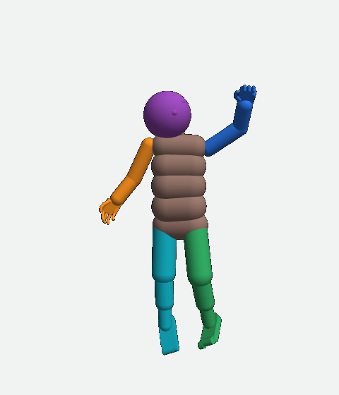
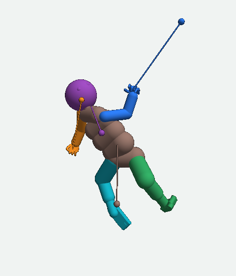
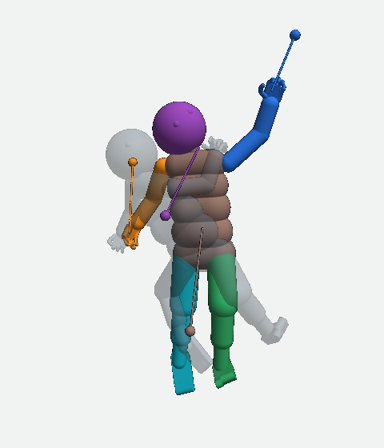
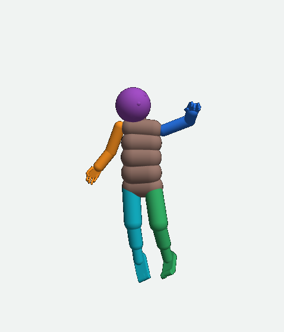
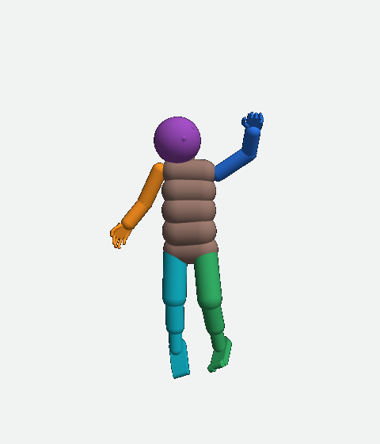
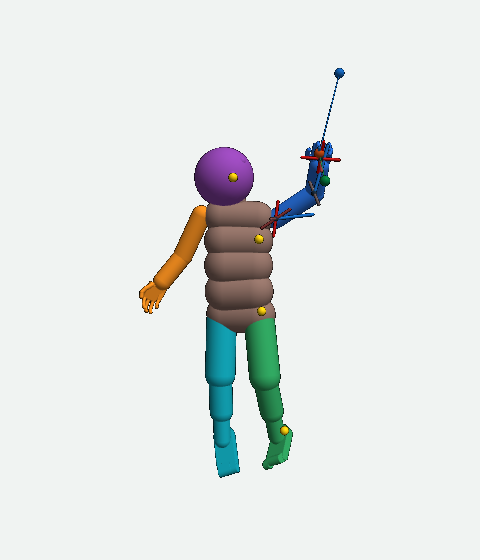
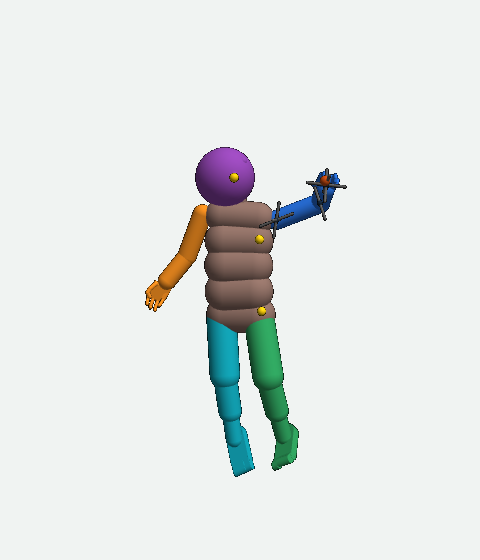

UEMA on the MIMo infant body • written October 23, 2026; revised 1:19 PM PDT after two independent reviews; status as of 12:57 PM PDT
Why MIMo's left hand went the wrong way, and what is being repaired
The setting. MIMo is a simulated infant body. A physics program, MuJoCo, moves it when its motors push. UEMA is the learning program that controls MIMo: every 50 ms it reads MIMo's senses, predicts what will happen next, and keeps the motors supplied with a command. The project's goal is for UEMA to learn useful movement: reaching an object, touching it, grasping it, rolling over. A first step on that road is the one this page is about: when UEMA picks an earlier pose of its own body to return to, the body should go back there.
Who did what. Two AI sessions work on this project beside the operator. The builder writes the code and runs the checks and the training. The overseer reviews the evidence and, when the operator is away, decides what may run.
What happened. On October 16 a training run was recorded. On October 19 the operator looked at one 0.25-second movement of the left arm from that run in the dashboard's movement viewer. The viewer's three pictures are the first thing on this page. The middle one looked wrong, and the arm's final pose looked much like its start. This page explains, from the saved numbers, what those pictures are, why the hand went where it went, which faults were found, and what has been done about each one. Each term is explained the first time it is used.
1 • The picture the operator saw
Three pictures of one movement: before, what the command asked for, and after.
The dashboard's movement viewer draws one movement from the saved records of a run. The operator exported the movement of body 3 at model step 494,810 of the run named POSE_A_off_494025. A model step is one 50 ms update of UEMA. The run was an ordinary training run of October 16. The viewer labelled its three columns Start, Asked for and Got to. Here they are, front view, as exported:
Start

The body before the command. It was lying on its back; the viewer draws it standing and alone, with a tilted camera, so the pose is easy to see. MIMo faces you, so its left arm (blue) is on your right.
Asked for

The viewer's drawing of what the command asked for. This is the picture that looked wrong. The next paragraph says what it is.
Got to

The body 250 ms later, with the asked-for drawing in pale grey behind it. The left arm rose by 7.4 cm at the hand and straightened by 14.5° at the elbow.
What the middle picture is
A command is what UEMA gives the motors: a table of 26 body parts × 9 numbers. For each part: where it should be (x, y, z in cm, in the world's coordinates, where the floor is at height 0), which way it should turn (4 numbers that together name one 3-D turn, a quaternion), a radius that no motor reads, and a strength from 0 to 1 that sets how hard the motors push for that part. The viewer drew the middle picture by taking each powered body part, turning it the way the command asked, and gluing it to the part before it. It did not check whether any joint can make those turns. For this command, no joint can. With the upper arm turned as the command asked, no elbow angle inside the elbow's range (−146° to 5°) turns the forearm the way the command asked; the nearest, −73.5°, leaves the forearm 57.8° off. The two knees are 76.4° and 75.5° off the same way, and the right elbow 14.4°. So the drawing shows a body that cannot exist. The rods and dots are the viewer's marks for the places the command asked the hands, head and hips to go. The left hand's dot is 36.9 cm from the hand of this impossible drawing; from the real hand it is 23.0 cm, the number the rest of this page uses.
Two different things went wrong in this picture. The drawing showed an impossible body: a fault in the viewer. And the command asked for an impossible body: a fault in how the command was chosen. Fixing the drawing alone cannot change where the motors put the hand. Both faults are named and tracked in section 7; the sections between show how the hand came to go where it went.
2 • The parts of UEMA that made this movement
Nine numbered parts, with the command, the simulated world and the recorder.
The diagram shows the parts of UEMA this page talks about, by the names the project's component list gives them. Each part is explained once, below the diagram. Arrows point the way the numbers flow; where the dashed line crosses a solid one, the two do not join. On a phone, swipe the diagram sideways.
1 MIMo's senses
What the body measures every model step: pictures from its eyes (vision), pressure on its skin (tactile), sound (audio), where each body part is and how fast it moves (proprioception), and which way gravity pulls on the head (vestibular).
2 encoders
One small network per sense that turns that sense's readings into a token: a fixed-length list of numbers the rest of UEMA works with.
3 transformer (the core)
The large network that takes the tokens of the newest model step and of the remembered ones, and outputs one list of numbers per token for the parts that come after it.
4 the heads: the prediction heads and the body head
Small networks that predict the effect of a command. The prediction heads, one per sense, output what that sense's token will be one model step (50 ms) later. The body head takes the command directly, beside the transformer's output, and outputs each body part's position (cm) and turn (degrees) after the command's 250 ms. The planner search (part 8) hands one of them a command and reads back the predicted effect (the dashed arrow): in the run of section 1 it used the prediction heads' tokens; since October 22 it uses the body head's positions. The body head is trained after every command by a loss term: a number the trainer makes smaller by changing the network's weights, here the difference between the body head's predicted 250 ms movement of each part and the measured one. The change the trainer makes is the gradient, the learning signal. The project calls that term the tenure heads' lesson; this page calls it the existing loss term.
5 goal ring
A memory, per body, of the tokens of each of the last 200 model steps, each stored with its wellness value. Wellness is a fixed formula, not learned, computed by a separate part (the wellness evaluators, not drawn): it scores each model step from the senses' readings (a better-predicted model step scores higher, comfortable touch scores higher, and so on), each term between 0 and 1, summed.
6 planner goal selection
Every 10 model steps, ranks the goal ring's entries by their stored wellness and outputs the tokens of the highest-ranked entry as the goal: the remembered model step the planner search will try to get the body back to.
7 motor controller
A network that outputs a command from the transformer's output and the body's present pose (the arrow from the transformer to it is left out of the drawing to keep the drawing readable). Its output is the first command of the search.
8 planner search
Starts from the first command and changes it 20 times, each time in the direction that lowers the score (the Adam method, a standard way of making such changes). The score of a command is the planner goal distance: how far the predicted effect of the command is from the goal, plus an effort cost for the strength the command asks. Of the 21 commands scored (the first and 20 changes) it keeps the one with the lowest score, and that command is sent to the body.
9 command execution path
Turns the command's 26 rows into one motor control per motor, a number from −1 to 1 that MuJoCo turns into torque: for each joint it computes how far to turn to meet the command's requests (section 5 shows the computation for the arm) and sets each motor's control from that. The simulated world then moves the body for 5 model steps (250 ms) under that command. The observer recorder saves every record: each body part's position and turn, the joint angles, the motor controls, the contacts, the command, and the planner's own numbers.
The timing. Every model step (50 ms): the senses are read, encoded, and run through the transformer, and the heads make their predictions. Every 5 model steps (250 ms) a new command starts and is held for those 5 steps. Every second command (every 10 model steps) comes from the planner search; the others are the motor controller's command as it is, and on part of them a random variation is added (the project calls that babble).
3 • The goal at this model step
The goal was the body's own state from 0.15 seconds before the start.
At model step 494,810 the planner goal selection ranked the goal ring's 200 entries by wellness. The entry that ranked highest was the one saved at model step 494,806: 3 model steps (0.15 s) before the start record (494,809) and 4 before the planning step. It ranked highest because its stored wellness rank value was the highest of the 200; the ranking's own numbers are in the run's record and not on this page. The task it set: get the senses back to what they read 0.15 s before the start, which means undoing 0.15 s of drift.
In this run the search measured how close a command would get to the goal by comparing predicted tokens with the goal's tokens. It did not compare body positions. That is the fault repaired on October 22; section 8 gives the repair. But every token was saved with the body pose of its model step, so the goal can be drawn as a body. To measure the hand, the project uses the hand point: a fixed point inside the palm (in the body model, the hand body's origin). Here is the goal beside the start, drawn upright with the same camera:
The goal: the body at model step 494,806

The green square marks the left hand point in this record.
The start: the body at model step 494,809

The orange ring is the hand point now; the green square is where it was at the goal. The two are 7.5 cm apart, the goal's being 2.9 cm higher. The elbow is 17.7° straighter than at the goal.
A good command would have moved the hand point 7.5 cm back toward the goal's hand point. Section 1's Start picture and this one show the same saved body (model step 494,809); only the camera differs.
4 • The command the planner search chose
It asked the left hand to go 23 cm away, 156.8° off the goal's direction, and asked for turns no elbow can make.
The planner search started from the motor controller's command and changed it 20 times. The lowest score belonged to the 20th change, so that command was sent. Its three rows for the left arm were:
Body part
Requested position x, y, z (cm; the floor is at z = 0)
Strength (0 to 1)
What the motors use from this row
The requested hand position is 23.0 cm from where the hand point was at the start, and 0.47 cm below the floor. The goal's hand point was 7.5 cm from the start in a different direction: the two directions are 156.8° apart (0° would be the same way, 180° exactly opposite), and the requested position is 30.0 cm from the goal's hand point. The requested turns of the upper arm and the forearm cannot both be met, as section 1 said: the nearest elbow angle leaves the forearm 57.8° off. The motors cannot do that, so something had to give; section 5 shows what did.
Why the search chose this command
The search scores a command by the planner goal distance. In this run that was the goal term plus the effort cost. The goal term: the prediction heads' output for the senses' tokens 50 ms ahead, compared with the goal's tokens (0 means the predicted tokens equal the goal's; there is no fixed top). The effort cost: a constant times the sum of the squared strengths (0 means no strength asked). Both numbers for this model step are in the run's own record (rounded to three decimals; the totals and changes were computed before rounding):
Score part
First command
Chosen command (the 20th change)
Change
Goal term: predicted tokens against the goal's tokens
0.099
0.082
−0.017
Effort cost: the strengths the command asks
0.076
0.009
−0.067
Total
0.175
0.090
−0.085
Most of the drop in the score, 0.067 of 0.085, came from asking for less strength, not from a better match to the goal. And the goal term looked only 50 ms ahead of a 250 ms command, at tokens, not at positions. Nothing in the score counted the hand's distance to the goal's hand point, so the search had nothing to lower by sending the hand there. This is the fault in the score; section 8 gives the repair.
5 • From the command to the motion
The motors must move a connected arm. This command could not be followed, so the command execution path computed a compromise.
The command execution path turns the arm's three rows into motor controls in four steps:
Input: the arm's three rows upper arm: turn + strength forearm: turn + strength hand: position + turn + strength
↓
One solve for the seven arm joints The arm has seven joints: three at the shoulder, one at the elbow, three at the wrist. The errors to remove: the requested hand position minus the present hand position (in metres, multiplied by 8, so that 1 cm of position error counts as much as 4.6° of turn error); and for each of the three parts, the smallest turn from its present direction to its requested direction (in radians), multiplied by that row's strength. The path then finds the seven joint changes that make the sum of the squares of all those errors smallest (damped least squares, a standard solve that also keeps the changes small). When the requests conflict, the solution is a compromise between them.
↓
Limits, then motor controls Each joint change is clipped to the joint's range. Each motor's control = the row's strength × (6 × the joint change in radians − 0.3 × the joint's speed in radians per second). A 10° change is 0.17 radians, so at strength 1 it asks for a control of 1.05, the full motor. If any control exceeds 1, the whole arm's controls are scaled down together.
↓
Physics MuJoCo turns each control into torque and applies it for 250 ms. Body weight, the motion the body already had, and contact with the floor all act at the same time.
What that meant for this command
The upper arm's and the forearm's requested turns conflicted. The solve settled between them, weighted by their strengths (0.49 and 0.44). 50 ms into the command the upper arm pointed 55.8° away from its requested direction and the forearm 39.2°; at the end, 43.7° and 16.0°. Neither reached its requested turn.
The shoulder's horizontal joint (the model's left_shoulder_horizontal) was driven at the full motor control of −1.0 in the first record after the command started (50 ms) and reached 0.3° from its −28° limit by the end. The elbow's motor control stayed between 0.01 and 0.11, pushing the elbow open, away from the goal's bend. Section 6 shows this frame by frame.
The hand's requested position was 0.47 cm below the floor. The floor did not stop this hand: the saved contact records during the command (50 ms to 250 ms) list the hip, the head, the right foot and, at 250 ms, the right upper arm on the floor, and no part of the left arm. (At 0 ms, before the command, the left foot and the upper body were on the floor too.)
The command execution path ignores two things in every arm row: the upper arm's and the forearm's requested positions, and every radius. They never reach the motors. The body head, though, reads all nine numbers; that matters in section 7.
6 • The movement, frame by frame
The hand followed the command and so went away from the goal. Here is every 50 ms of it.
These are the six saved records of the command's 250 ms, drawn from the saved joint angles (no physics was run to make them), with marks drawn inside the MuJoCo scene before rendering. The 0 ms record is the one just before the command; its motor controls and floor contacts belong to the previous command. Press Play, or step through. The right-hand picture is always the goal, for comparison.
Camera:Frame:
Hand point nowHand point at the goalHand position the command asked forDirection the command asked a part to pointA joint's axis: red at full motor control, grey at none, shades between for values betweenA point where the body touches the floor
The ring, square and dot are drawn on top of the picture. Orange, green and blue balls mark the same three points inside the 3-D scene; the orange one sits inside the palm and is often hidden by the hand.
0 ms: the start

The goal (model step 494,806)

The goal picture shows the goal's seven joint axes in grey (its motor controls are not part of this story) and the green square at its hand point. In the left picture, the green line joins the hand point to the goal's hand point and the blue line joins it to the position the command asked for. Printed distances are measured in space, not on the picture.
The left hand point, the joint that moved most (the shoulder's horizontal turn, 45.8° in all), the elbow, and the two parts' direction errors, at each frame
Time after the command
Hand point to the goal's hand point
Hand point to the command's position
Shoulder horizontal angle (limit −28°)
Shoulder horizontal motor control (−1 to 1)
Elbow angle (goal −68.0°)
Elbow motor control (−1 to 1)
Upper arm off its requested direction
Forearm off its requested direction
Read the second and third columns together. The distance to the command's position fell every frame (23.0 cm to 17.1 cm): the motors did what the command asked, as far as the joints allowed. The distance to the goal's hand point rose every frame (7.5 cm to 14.6 cm): the command pointed away from the goal. The shoulder's horizontal motor was at its full control at 50 ms and that joint ran to its limit; the shoulder's twist (its third joint) also turned 34.4°; the elbow's motor control stayed at or below 0.11, and the elbow opened from −50.2° to −35.8° while the goal's elbow was bent at −68.0°.
All seven left-arm joint angles at each frame (saved joint positions, in degrees; a negative angle is measured the other way around the joint's axis; the body model does not name which way is forward)
Joint
Goal
0 ms
50
100
150
200
250 ms
Range
Could the elbow alone have fixed it?
The elbow was the joint farthest from its goal angle, so it is the first joint to test. The two drawn arm poses below answer the question. They were made by setting joint angles on the start body and computing where the connected bones put the hand (forward kinematics: joint angles in, positions out). No motors or physics were run, so they say where a pose would put the hand, not whether the motors can reach it in 250 ms. All three are close views with a camera different from the frames above.
A. The start, as recorded
The left arm at 0 ms. Hand point to the goal's hand point: 7.5 cm. Joint angles: the 0 ms column of the table above.
B. Only the elbow set to the goal's angle
Elbow −50.2° → −68.0°; the other six joints as at 0 ms. Hand point to goal: 8.1 cm, worse.
C. All seven joints set to the goal's angles
All seven joints at the goal column of the table above. Hand point to goal: 1.1 cm. Not zero, because the chest and the rest of the body are still as at 0 ms.
So the elbow alone cannot do it: bending the elbow with the shoulder left as it was moves the hand farther away. The seven joints have to move together. The solve of section 5 treats the three arm rows as separate requests, so unless the three rows describe one connected arm, the solve settles on a compromise that reaches none of them. For the same reason, a prediction of where the arm will be must describe one connected arm; the repair under test (section 10) is built on that.
7 • The faults found, and the state of each repair
Four faults. Each has a name in the project's defect register or a repair with a checked state.
The project records each repair in one of eight states. The ones used here: CAUSE KNOWN (the mechanism is understood, no repair in use), BUILT/OFF (code exists but is switched off or not deployed), QUALIFIED/OFF (its registered check passed, not yet used in training), and VERIFIED (shown to improve the ability in training). Nothing on this page is VERIFIED. Every check named below is a row on the project's Tests page, with its conditions and its time.
Fault 1. The viewer drew an impossible body. Defect register: MOVEMENT_VIEWER_DREW_UNREACHABLE_REQUEST_AS_BODY, state BUILT/OFF.
Section 1. A repaired viewer (render version 17) draws one pose inside every joint range and shows the requested directions as rods beside it. It exists on branch repair/whole-body-request-2026-10-21. Its 8 drawing tests (that the repaired drawing draws; that its corrected command reproduces the 57.8°, 76.4°, 75.5° and 14.4° figures of section 1 on this command; that every drawn joint is inside its range) passed on October 21 at 2:01 PM PDT (Tests row whole_body_request_package_tests_20261021). Deploying it to the dashboard waits on a re-check of its package and the decision, so the dashboard's viewer service still runs version 16.
Fault 2. The command asked for limb directions no joint can give. Defect register: WHOLE_BODY_COMMAND_LIMB_DIRECTIONS_UNREACHABLE, state CAUSE KNOWN.
Sections 1 and 4. Every row of a command is a pose for one body part on its own, and the command execution path turns each row into motor controls using only that part's own joints, so two rows can contradict each other and both are sent as they are. A correction exists: it projects the forearm's and the calf's requests onto what the elbow and the knee can do before the controls are computed. It was built on September 25 and is switched off by its launch flags. On October 21 it was tried on a different recorded command (run seg41j, body 5, model step 483,120), from a replayed copy of that body's saved state: its test asked whether the corrected command brought the body nearer the requested directions at 250 ms, and it did (Tests row whole_body_request_comparison_483120). But that test did not ask about the goal, and both the original and the corrected command moved the body farther from the goal pose than the start. The overseer therefore rejected its adoption for reaching at 4:41 PM PDT. The contradictions are measured; whether removing them helps reaching is not shown.
Fault 3. The score the search used did not measure where the body would end up. Repair: the pose-error score, built October 22, used in two bounded learning runs; not VERIFIED.
Section 4. The planner goal distance compared predicted tokens 50 ms ahead and charged for strength, so a command could win by asking for less strength while sending the hand the wrong way. The repair replaces the goal term with a comparison of the body head's predicted positions and turns after the full 250 ms against the goal's recorded pose. Section 8 gives the computation. It ran in the learning runs of October 22 and 23.
A part of this repair. The search could also lower the score by changing the numbers the command execution path ignores (the upper arm's and forearm's positions, every radius; section 5). The body head reads those numbers, so changing them changed the prediction while changing nothing the motors did. Since October 22 every changed command keeps those numbers at the first command's values. Checked on October 22: 16 conditions at 6:45 PM PDT (that no changed command alters those numbers or sends a gradient through them, before or after the conversion to the sent form; that the first command is unchanged; that the score does not depend on them), then 27 conditions at 11:58 PM when the same rule was applied to two more commands the recorder keeps beside each decision (copies of the command with random noise added, saved for a separate diagnostic) (Tests rows decoder_inert_fields_check and decoder_inert_fields_check2). It ran in the run of October 23.
Fault 4. The body head's predicted arm parts do not join, and its predicted scores are lower than the measured ones. Found October 23. Repair: an arm-consistency loss term, state QUALIFIED/OFF.
Once the score compared the body head's predicted positions (fault 3's repair), the run of October 23 recorded 72 predictions beside what the body did. The body head predicts each body part's position on its own, with no bone length or hinge axis in the computation, and the records show its predicted elbow sitting off the end of its predicted upper arm by a median 1.02 cm (left arm) and 0.69 cm (right arm), and its predicted pose-error scores lower than the measured ones. Section 9 has the numbers; section 10 has the repair and its status.
8 • The repaired score
Old score: how alike will the senses be, 50 ms ahead? New score: how far will each body part be from the goal's pose, 250 ms ahead?
Old score (the planner goal distance), used in the run of section 1
Input: the prediction heads' predicted tokens for the next model step (50 ms) and the goal's stored tokens, per sense; the command's strengths.
Computation: for each sense, the mean squared difference between the predicted token and the goal's token; sum over the senses; add the effort cost (a constant × the sum of the squared strengths).
Output: one number per body; lower wins. It never measured a position in centimetres, and it looked only 50 ms ahead of a 250 ms command.
New score (the pose-error score), built October 22
Input: the body head's predicted position and turn of 25 body parts after 250 ms (the 26th row, the eyes, is left out); the goal record's measured position and turn of the same parts.
Computation: for each part, divide each position difference (x, y, z) by 1.80 cm and square it; take the shortest rotation from the predicted turn to the goal's turn as three numbers, divide each by 11.0° and square it. Average all the position terms, average all the turn terms, add the two averages. The two divisors are the project's measured typical size of one 250 ms movement of a body part, so a movement-sized error counts as 1.
Output: one number per body. 0 means every part at the goal. Each of the two averages reads 1 when every axis is one typical movement off, so 2 means every position and every turn is one typical movement off, and 1 means, for example, the positions one movement off with the turns exact. Lower wins; the strength cost breaks only an exact tie.
The keep rule. A changed command is sent only if its predicted score is below both the score of standing still (the start pose against the goal) and the first command's predicted score. Otherwise the first command is sent as it is. In the run of October 23 that happened in 6 of 72 cases.
Why a better predicted score is still not a better movement. The new score compares the body head's prediction with the goal. If the prediction is wrong, a low score means nothing. The run of October 23 measured exactly that: the predicted scores were lower than the measured ones by a median 0.634 (so the body head predicted more progress than the body made), and the body's measured score fell below its start in 43 of 72 cases. The body head, not the score, is now the weakest part of the chain, and section 10's repair works on it.
9 • The learning run of October 23 and its 72 matched records
With the new score in place, the body ended nearer its goal in 43 of 72 cases, and the body head was shown to place arm parts no arm can hold.
The run. 100 model steps of learning, from model step 496,250 to 496,350, eight bodies in eight worlds, 5.0 s of simulated time each, 2:52 AM to 2:59 AM PDT. The model and all eight worlds were saved. At nine planning model steps (496,260 to 496,340) in each body the trainer saved the command, the first command's prediction, the chosen command's prediction, the start record and the end record: 72 outcomes, every one joined to its records. (A first attempt on October 22 was stopped while its checkpoint was being written; its detail records were only partly written, so its 48 outcomes could not be matched to their commands exactly, and these 72 supersede them.)
The sets of records this page's numbers rest on
Set
What it is
Used for
72 outcomes
every command of the run of October 23: 9 planning model steps × 8 bodies
the counts below; findings 1 to 3
66 and 6
the 72 split by whether the search changed the command or sent the first one
findings 2 and 3
69 and 63
the 72 minus 3 inexact records (explained below), and the changed commands among those 69
the recount; the common input of the pair in section 10
392 older predictions
49 records × 8 bodies of a run of October 22 (S4R_measure_496000): the body head's predictions for commands that were executed
finding 1's earlier measurement
152 predictions, 304 arms
19 records × 8 bodies of the October 23 run's own training records, two arms each
the weight rule and the hand ball in section 10
What was measured over the 72 outcomes
Measurement
Count
Pose-error score at the end below the start (the body ended nearer its goal pose)
43 of 72
Mean distance of the 25 body parts to the goal pose, end below start
45 of 72
Left hand point nearer its goal point at the end than at the start
44 of 72
Right hand point nearer
38 of 72
Both hand points nearer
25 of 72
The search changed the command (the other 6 sent the first command)
66 of 72
Among the 66 changed: the chosen command's predicted score below the first command's
66 of 66
Among the 66 changed: the measured end score below the start
42 of 66
Among the 6 where the first command was sent: the measured end score below the start
1 of 6
Each outcome is matched to its records by time, and three of the 72 are inexact: the nearest saved record was farther from the exact time than the 5 ms allowance (plan step 496,270 body 2; 496,280 body 2; 496,300 body 3). Without them, over the 63 changed bodies of 69: end score below start 39 of 63; left hand point nearer 43 of 63; right 33 of 63.
What reaching would look like: a hand point ending within a declared arrival distance of its goal point, and doing so again. No arrival distance has been declared, so these counts measure direction, not arrival. They are also 72 commands by eight bodies at nine times, not 72 independent attempts at one reach.
Three findings
The predicted parts do not join. On the first command's prediction, the predicted elbow sat off the end of the predicted upper arm by a median 1.02 cm (left) and 0.69 cm (right); the predicted elbow's turn was off its hinge axis by a median 3.56° and 3.71°; the predicted upper arm's origin sat off its place on the chest by a median 0.26 to 0.29 cm. On the measured poses the same readings are 0.000001 cm and 0.000001° in size, the measurement floor. The same had been measured on the 392 older predictions: all 392 above the floor, median elbow gap 0.81 and 0.73 cm.
The search's chosen prediction was less joined than the first command's in 36 of the 66 changed bodies (by a median 0.21 cm more) and more joined in 30. Larger predicted gains came with larger added gaps (rank correlation 0.35 to 0.39; 0 = no relation, 1 = in step). The gains and the gaps occurred together; these records do not show that one caused the other, and most of the gap was already in the first command's prediction.
The predicted scores are lower than the measured ones. The chosen command's predicted score was below the measured end score by a median 0.634 (score units of section 8). The larger the predicted gain, the larger that miss: rank correlation 0.30, the strongest of the relations to the miss. The arm gaps' relation to the miss: 0.14 to 0.27.
Right hand point to its goal point, in the case with the largest gap between predicted and measured score (body 5, the command at model step 496,280)
Start
Chosen command's prediction
Measured end
19.48 cm
16.62 cm
23.63 cm
The predicted right hand point and the measured one at the end were 7.49 cm apart. Three such cases were drawn from the saved records; pick one and step through its five panels:
The median cases are the middle-ranked ones by the size of the measured score change. On a phone, swipe the picture sideways to see both arms.
How to read the prediction panels. Purple dots are the body head's predicted shoulder, elbow and hand point, each predicted on its own, so no line joins them. The grey rings joined by a dashed line are a fitted allowed arm: one set of seven joint angles inside their limits, found by a local fit and placed on the predicted chest. It is a comparison drawing, not the nearest possible arm and not a movement. Red lines: the gap between each purple dot and that fitted arm. The faded avatar is the start body.
10 • The repair under test: an arm-consistency loss term
A new loss term penalizes predicted arm parts that no connected arm can hold. It is built and checked. A matched learning pair (one run with it off, one with it on) is authorized and not yet launched.
The body head already has the existing loss term (section 2, part 4): the difference between its predicted 250 ms movement of each part and the measured one. That term stays as it is and is logged on its own. The new term is added beside it.
What the new term computes
Input: the body head's output for one command: the positions and turns of the chest, upper arm, forearm and hand of each arm after 250 ms.
Computation, four readings per arm from MIMo's body model: (a) shoulder link: the distance between the predicted upper arm's origin and its fixed place on the predicted chest; (b) upper-arm link: the distance between the predicted elbow and the point 12.04 cm along the predicted upper arm, where the forearm attaches; (c) elbow off-axis: the part of the predicted elbow turn that is not around the hinge axis, in degrees; (d) hand ball: how far the predicted hand origin lies outside a ball of radius 8.43 cm around its rest place in the forearm frame, a bound that holds for every wrist angle. Each reading is divided by 1.80 cm or 11.0° (the scales of section 8), passed through smooth L1 (squared below one scale unit, linear above it; the elbow term on the length of its 3-number vector), summed, and multiplied by the weight.
Output: one number per body added to the training loss. Its gradient reaches the body head's own weights (21 weight arrays, all the body head's) and no other part of UEMA. It changes no command, no score and no selection. With the term off, or its weight 0, the loss, every gradient and the random state equal the old code bit for bit, and the saved body head loads with all 50 of its weight arrays equal to the saved ones.
Not constrained: an elbow angle beyond its range (a soft limit; logged only). The hand ball flagged 0 of the 304 saved arm predictions (the data-set table of section 9), so it is inactive on this data.
The weight: 0.2, and why
A weight too large would let the new term overpower the existing one, and the body head would learn joined arms that land in the wrong place. So a rule was declared before the check. On the body head's last layer (the one that writes its output), the size of the new term's gradient divided by the size of the existing term's gradient, at weight 1, is 2.465 at the 90th percentile over the 152 saved predictions. The weight times that ratio must be at most 0.5, so that for 90 of 100 predictions the new term's gradient on that layer is at most half the existing one's. The largest weight tried that meets it is 0.2. Not bounded by this rule: the other 10 of 100, the sum over a training batch, the earlier layers and the optimizer's effect; the live clipping of gradients is measured during the run.
Checks run (rows on the Tests page)
arm_consistency_check, 7:03 AM PDT: 24 of 24 declared conditions passed, 17.48 s. Its recorded readings then showed a defect the conditions had not covered: at a test input with the elbow turned 179° off its hinge axis, one training step lowered the term while the measured off-axis angle grew by 0.022°; with each coordinate of the elbow reading penalized on its own, off-axis turns above a range of 125° to 135° were penalized less as they grew. The elbow term was changed to the length of its vector (commit 44ad0301e).
arm_consistency_check2, 7:44 AM PDT: 25 conditions and 48 turn directions passed. At exactly 180° the term's gradient is zero, recorded as a limit.
arm_consistency_sampling_check, 7:56 AM PDT: 32 of 32 conditions; the run's measurement of gradient sizes changes no training step bit for bit.
arm_consistency_comparison_smoke, 8:36 AM PDT: the comparison program read the saved 496,350 state and gave bit-identical results twice on 69 of 72 examples (the three inexact ones excluded), 62.51 s.
The matched learning pair
Control (weight 0) and treatment (weight 0.2), each 100 model steps (496,350 to 496,450) from the same saved state and eight worlds, one run after the other. Ceilings: 600 s per run including 180 s for saving, 240 s for the comparison and 60 s of overhead, 1,500 s in all. Both endpoints are saved. It measures the body head's accuracy on one common input (the 69 saved examples, built once and given to both endpoints), and each run's live outcomes: each hand point's distance to its goal point, the body's position and turn error, the four geometry readings and the existing term's error. The two live runs diverge after their first commands, so they are not identical-state trials. A favourable result supports a next decision only; nothing is promoted or resumed by itself.
The project requires seven checks, the preflight gates, before any new training configuration runs. All seven read FAIL for this configuration, each for a written reason: (1) the flow of every command number to the predictions is shown only for the arm path tested here, not for all 26 parts; (2) the gradients the live run produces are measured only by bounded samples; (3) the weight rule bounds 90 of 100 predictions, not all; (4) local stability (small input changes giving small physical changes) is not shown; (5) controllability (a changed command giving the matching physical change) is not shown; (6) the pass lines are engineering comparisons on records that are not independent; (7) the end-to-end chain for this configuration will be shown only by the run itself. The overseer authorized the pair anyway as a bounded exception: a one-time permission for a run of fixed length that does not count as passing the gates (decisions of 8:50 AM and 9:07 AM PDT).
Launch state at 12:57 PM PDT, October 23: not launched. At 9:06 AM the project's preflight tool, which binds each training run to the decision that authorizes it, refused the second run of the pair because one decision admits one run; the overseer issued the treatment run's own decision at 9:07 AM. At 12:46 PM the resource guard refused the launch because the C: drive had 5.81 GB free against the required reserve of 12 GiB (12.9 GB). At 12:55 PM the overseer authorized moving 8.49 GB of old project files to drive D:. At 12:57 PM no trainer ran and the supervisor control file read pause. Next: the relocation, the guard's recheck and the launch; then the two runs, their readings, the common-input comparison and the pass/fail program that reads them.
11 • The ten questions a repair must answer
The overseer wrote these ten questions on October 22 as the checklist that should have been used. Here is each one with its answer today.
1. Does the repair address the operator's complaint?
The complaint had two parts. The strange middle picture: a viewer fault (fault 1), repaired on a branch, not deployed. The poor movement: the command pointed away from the goal because the score never measured where the body would end up (fault 3, repair built and used, not VERIFIED) and because the command's rows contradicted each other (fault 2, CAUSE KNOWN). The repaired score ran on October 23 and produced the first matched records (section 9), which found fault 4, the body head's unjoined predictions. The movement itself is not yet repaired: the body ended nearer its goal pose in 43 of 72 cases, and the next repair (section 10) is waiting to be run.
2. Is the goal defined?
Yes. The goal is one earlier record from the goal ring, ranked highest by wellness; at the picture's model step it was the record from 0.15 s before the start (section 3). The new score measures 25 body parts' positions and turns against that record's measured pose (section 8). The command's requested hand position is a different thing (section 4) and is not the goal.
3. Does each number the search changes affect the body?
Not before October 22: the search could change the upper arm's and forearm's positions and every radius, which the command execution path ignores. Since October 22 those numbers are held at the first command's values in every changed command. Checked: 16 conditions, then 27 (section 7, fault 3; each condition is one test that a changed command leaves those numbers, and the gradient through them, untouched).
4. Can the predicted body exist?
Measured, and no: on the 392 older predictions and on the 72 of October 23, the predicted elbow sits off the predicted upper arm by a median 1.02 cm (left) and 0.69 cm (right) while measured poses read 0.000001 cm (section 9). The repair for that is the loss term of section 10, built and checked, not yet in training.
5. Is the predicted pose reachable in 250 ms?
Not tested as asked: no check yet says whether the motors could have reached the predicted pose in 250 ms. What the 72 records show is that it was not reached: the predicted scores were below the measured ones by a median 0.634, and the measured end hand point was farther from its goal than predicted in 36 of 66 cases (left, by a median 0.30 cm) and 38 of 66 (right, by a median 0.75 cm). How much of that gap is a motor limit, a contact, or a wrong prediction is not separated. The pair of section 10 keeps recording the prediction and the measured end pose side by side, which is the evidence a reachability test needs.
6. Does the intended hand improve?
The task today has no single intended hand: the goal is a whole earlier pose, so both hands are measured. On October 23 the left hand point ended nearer its goal point in 44 of 72 cases, the right in 38 of 72, both in 25 of 72 (section 9). A body-wide average can hide a worse hand, so the pair of section 10 reports each hand on its own; a task that names one hand will be judged on that hand's distance.
7. Is each cause measured, or only suspected?
Measured: the viewer's drawing method (fault 1); the contradictions in the command, 57.8° at the left elbow and 76.4° and 75.5° at the knees (fault 2); the score's two parts at this command (fault 3); the body head's unjoined parts and its predicted scores below the measured ones (fault 4); and that the floor did not touch the left arm during the command (section 5). Suspected, not measured: how much of the 7.1 cm growth of the hand's gap came from the contradiction and how much from the compromise and the motor limits; and whether the loss term improves reaching (the pair of section 10 is the test).
8. Do the learning and the evidence survive a stop?
Since October 22, yes: the run of October 23 saved its model and all eight worlds at 496,350; the overseer checked every file of that saved endpoint, 274 files, against its recorded hash; and the recorder now writes its file of records every 5 model steps instead of every 100, so a finished capture is on disk before a stop. The stopped run of October 22 had lost part of its detail records that way.
9. Are the cost and the stop rule clear?
Standalone checks: at most 900 s of executable time per registered question, retries included; each check on this page states its seconds. Training: 100 model steps per run with the ceilings of section 10, and the program that runs the pair (the owner) stops new work rather than cut a checkpoint write. The pair's stop lines are detectors of gross breakage, set in its criteria file above every error the run of October 23 produced and not calibrated to noise: the body's position error above 5.3464 cm or its turn error above 33.1384° at a command's end, a non-finite loss or gradient, or invalid geometry; a crossing preserves the state and ends the run.
10. Do the pictures explain the mechanism?
Section 1 shows the viewer's own pictures and says what each is. Section 6's frames and table show the three movements that explain the miss (the shoulder's horizontal turn to its limit, 45.8°; the shoulder's twist, 34.4°; the elbow opening, 14.5°), each motor's control, the requested directions, the two distances and the floor contacts, drawn inside the MuJoCo scene. Section 9's panels keep predicted parts, the fitted comparison arm and the measured body apart, each labelled. Whether the pictures read clearly to a newcomer was tested by two independent hostile readers and by a real-browser check at desktop and phone width; the records are in section 12.
12 • Sources and review record
Every number on this page comes from one of these files.
This page reads saved data and draws MIMo from saved joint angles. It runs no physics and no training, and it authorizes nothing.
The viewer export the operator screenshotted: D:/UEMA_Research/external/D/UEMA_movement_viewer/pictures/ea26f7094e53f0f48a8a/ (export.html and the pictures of October 19, 9:45 AM PDT; the three shown here are copied with their hashes into path_detail.json).
The movement frames, angles and distances of sections 3 to 6:path_detail.json (drawn by render_path.py) and the marks, motor controls and contacts in gizmo_detail.json (drawn by render_gizmos.py), both from the preserved recording D:/UEMA_Research/external/D/UEMA_preserved/pose_comparison_POSE_A_off_494025 (body 3, chunk 000494725).
The command, its score and the joint contradictions:provenance.json and joint_detail.json (the seven joints, the drawn arm poses of section 6).
The parts of UEMA: docs/gain_of_function_v4/component_manifest.json (the names and the one-sentence descriptions of each part); the run's settings in its args.json (planning every 10 model steps, a 5-model-step hold, physical goals off).
The defect register: docs/gain_of_function_v4/defect_register.json, entries MOVEMENT_VIEWER_DREW_UNREACHABLE_REQUEST_AS_BODY and WHOLE_BODY_COMMAND_LIMB_DIRECTIONS_UNREACHABLE.
The score's code: commit f0183150b, Source/Python/lem/model/physical_goal.py lines 15–59 (the pose-error score and the keep rule) and 99–105 (the body head's predicted pose); Source/Python/mimo_bridge/action_decoder.py lines 435–505 (the arm solve) with the run's decoder_kp 6.0.
Current state:H84_RESUME_HERE.md and the Tests page rows named on this page.
Review record
October 23, 9:23 AM PDT: the operator rejected the earlier page (H84_BODY_REPAIR_EXPLAINED_2026-10-21.html) as unclear and poorly organized; the builder revised it in place.
October 23, between 9:40 AM and 12:40 PM PDT: the operator rejected that revision too: it did not say what UEMA is trying to do or which parts are involved, it referred to a screenshot the reader could not see, it used terms before defining them, and it left the ten questions unanswered. This page was written new from the saved records to meet that critique.
October 23, 12:46 PM to 12:53 PM PDT: a first independent hostile read of this page's first draft (an AI reviewer given the operator's critique and the project's writing rules) returned 5 headline findings and 60 numbered ones. All but two were applied in the second draft; the two were answered. 1:07 PM to 1:14 PM PDT: a second independent read of the second draft returned 8 unresolved items and 18 new ones (among them the goal's age counted from the wrong record, the score's scale sentence, the frame table's caption, the 0 ms row's controls, and diagram overlaps), all applied in this version. Both reports are summarized in review.json.
The real-browser check of this version (desktop 1440 px and phone 390 px: every image loads, no broken link, no script error, no sideways overflow, the frame player, the three arm poses and the fifteen gallery panels) is recorded with the page's hash and time in browser_checks.json.